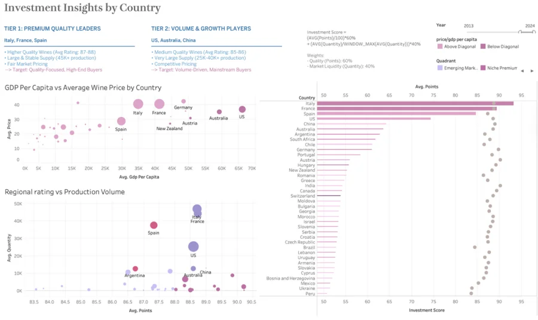
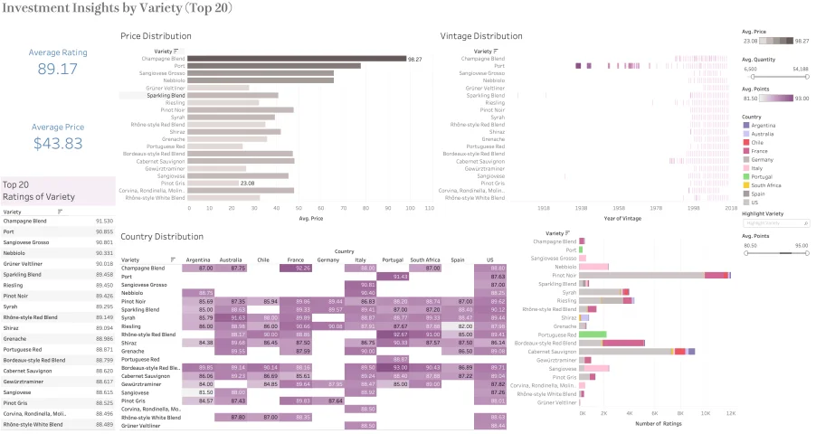

Ziyan (Freya) Zheng
Data Analytics & Machine Learning Professional

Business Analytics graduate student and CFA Level III candidate with 6+ years of commercial banking experience. Expert at simplifying complex problems to develop practical, data-driven solutions using Python, SQL, and machine learning.
Education
Master of Science in Business Analytics
UC San Diego, Rady School of Management
Relevant Courses:
Master of Financial Analysis
University of New South Wales
Relevant Courses:
Bachelor of Commerce
University of Sydney - Accounting & Quantitative Business Analysis
Relevant Courses:
Professional Experience
Senior Credit Analyst
CNOOC Finance Ltd.
Beijing, China • 09/2021 – 06/2024
- • Project Leadership: Spearheaded 10+ financing projects with comprehensive due diligence analysis, supporting $7B+ (50B+ CNY) in lending decisions using advanced financial ratios and risk metrics
- • Financial Modeling: Developed sophisticated Excel-based assessment models (DCF, sensitivity analysis, payback calculations) that improved deal structure recommendations and reduced risk exposure
- • Data Visualization: Created executive dashboards in Tableau to track KPIs and performance trends, delivering weekly reports to senior leadership for data-driven decision making
- • Process Automation: Engineered Python-SQL integration for compliance reporting, reducing manual processing time by 80% while improving accuracy and regulatory adherence
Commercial Banker
CNOOC Finance Ltd.
Beijing, China • 10/2017 – 08/2021
- • Client Analytics: Conducted comprehensive eligibility analyses and product recommendations, improving customer retention through targeted financial solutions
- • Predictive Modeling: Applied regression analysis to correlate industry cycles with liquidity patterns, optimizing fund utilization and reducing idle capital
- • Risk Management: Designed and implemented anti-money laundering monitoring system processing 100,000+ daily transactions with automated risk flagging capabilities
Skills & Competencies
Programming & Data
Analytics & ML
Business & Finance
Featured Projects (Click to expand ↓)
🍷 Wine Market Investment Analysis
Tableau Dashboard & Strategic Business Intelligence
4 interactive dashboards analyzing 130k+ wine reviews across 40+ countries. Identified two-tier sourcing strategy and underpriced premium regions for wine distributors.
📊 Tableau Dashboards
Dashboard 3 & 4: Investment Insights by Country & Variety
Displays GDP per capita analysis, regional rating vs production volume, investment score ranking across Tier 1 (Italy, France, Spain) and Tier 2 (US, Australia, China) countries.
Dashboard 4 Deep Dive: Variety Analysis (Top 20)
Price distribution by variety, vintage timeline spanning 1918-2017, country distribution heatmap showing geographic concentration of premium varieties.
💡 Key Insights
- ✓ Tier 1 (Italy, France, Spain): Premium stability focus with high quality (88-95 pts)
- ✓ Tier 2 (US, Australia, China): Scalable volume with competitive quality (85-90 pts)
- ✓ Investment Score: 60% quality (ratings) + 40% liquidity (production volume)
- ✓ Identified underpriced premium regions: Peru, China, India for margin optimization
- ✓ Vintage strategy: Classic varieties (Champagne/Port) for high-margin collectibles; modern varieties for volume sales
🎯 Outcomes
- ✓ Supported strategic sourcing decisions for wine distributors
- ✓ Identified underpriced premium regions for margin optimization
- ✓ Created repeatable investment analysis framework across 40+ countries
- ✓ Enabled data-driven portfolio diversification strategy
⚡ Snowflake ETL Pipeline
Cloud Data Warehouse & Weather Impact Analysis
Built end-to-end ETL pipeline integrating multi-format datasets (XML, CSV, API). Reduced processing time by 60% and discovered weather-payment correlation patterns.
🔄 ETL Pipeline Architecture (4 Stages)
- Stage 1 - Ingest: Multi-format data collection (XML, CSV, API endpoints)
- Stage 2 - Transform: Data cleaning & standardization using Python + SQL transformations
- Stage 3 - Load: Optimized warehouse loading using Snowflake PUT/COPY commands
- Stage 4 - Analyze: Weather-invoice correlation analysis to discover payment patterns
📈 Key Metrics
- ✓ 60% reduction in processing time vs manual approach
- ✓ Millions of records processed efficiently with optimized SQL queries
- ✓ Automated data ingestion reduces manual effort and errors
- ✓ Discovered correlations between weather patterns and payment delays
💡 Technical Highlights
- ✓ Multi-format data integration (XML, CSV, API to unified warehouse)
- ✓ Optimized SQL queries for handling large datasets
- ✓ Automated Snowflake PUT/COPY for reliable data loading
- ✓ Scalable infrastructure for future analyses
🤖 Wine Rating Recommender System
Hybrid Machine Learning Model (FPMC + Content-Based)
Developed hybrid recommendation engine combining collaborative filtering, sequential patterns, and content features. Achieved MAE of 0.3754 (3.37% improvement over baseline).
🎯 Hybrid Model Architecture
- Signal 1 (60%) - Collaborative Filtering: LFM with bias terms capturing user preferences
- Signal 2 (30%) - Sequential Patterns: Markov Chain modeling wine-to-wine transitions
- Signal 3 (10%) - Content Similarity: 77 wine features (Type, Country, Region, Body, Acidity, ABV, Grapes)
📊 Model Performance Comparison
- LFM Simple: MAE=0.3890 (baseline)
- LFM Improved: MAE=0.3820 (2.3% improvement)
- FPMC: MAE=0.3780 (2.8% improvement)
- ⭐ FPMC + Similarity: MAE=0.3754 (3.37% improvement) - BEST MODEL
✨ Key Advantages
- ✓ 3.37% improvement over baseline LFM
- ✓ Hybrid approach balances accuracy with explainability
- ✓ Content features solve cold-start problem for new wines
- ✓ 77 wine attributes enable rich feature engineering
- ✓ Interpretable recommendations ("Similar to wines you liked")
📍 Grocery Store Location Prediction
Data-Driven Location Analysis with Business & Health Impact
Analyzed 8,000+ California census tracts using dual-objective optimization. Identified 20 optimal locations balancing business viability and community health impact.
📊 3-Stage Analysis Pipeline
Stage 1 - Data Cleaning: Integrated 5 datasets from USDA, CDC PLACES, Census Bureau with standardized census tract IDs
Stage 2 - Feature Engineering: Created 4 composite indices (EHI, MSR, CNS, AGI) capturing economic, market, and health dimensions
Stage 3 - ML Modeling: Random Forest for business success (R²=0.78) + Gradient Boosting for health impact (R²=0.86)
📋 4 Composite Indices
EHI (Economic Health Index): (1-poverty)×0.4 + (1-uninsured)×0.3 + income_percentile×0.3
MSR (Market Saturation Ratio): Population / (existing_stores × 5000) - identifies undersaturated markets
CNS (Community Need Score): obesity×0.35 + diabetes×0.35 + poverty×0.2 + distance×0.1
AGI (Access Gap Index): (low_access_population + no_vehicle_households) / population
🎯 Key Findings
📈 Model Performance
Selected Model: Random Forest (best balance of accuracy and interpretability)
Business Success R²: 0.778 | Health Impact R²: 0.860
Overfitting Gap: 0.061 (acceptable < 0.10) - model generalizes well to unseen data
Top Predictors: Low-income status (46.7%), County median income (14.9%), Food access (12.7%), Housing density (9.9%)
💡 Policy Implications
The analysis reveals a fundamental trade-off between business profitability and social impact. Economic viability concentrates in high-income Bay Area markets, while critical food desert areas lack commercial incentive. Policymakers seeking to address food deserts may need separate subsidy or incentive models rather than pure market-based site selection.